In some local TV or radio stations in Mexico, it is common that citizens can communicate over the news and give their opinion regarding any topic. Frequently, people speak to discuss political issues. However, this has caused a problem, because on several occasions people has been direspectful or has started to verbally attack others while the news is broadcasting live.
The objective of the system is to have a tool with which its possible to have a control on the incoming calls, which helps to reduce the possiblity of taking calls from people who have had a wrong behavior during newcasts.
2. Objective
The objective of the system is to help employees who are mainly related to the news, helping the company to better server to its viewers. The system will be mostly used by people who will be responsible for taking the phone calls. However, the system will also be used by reporters and/or manager of the area, in order to obtain statistics about calls, indentify trends or problems of people, consequently provide a better information service.
Having a system that stores the information, opens the possibility that reporters can follow up on the problems of the town.
3. Store Call system
The objective of this section is to help the user to know how to use the system and what to expect from it. The main elements of the system are:
[Image 1] Elements from the system.
In the following sections each of the elements are explained in detail:
The employee must type a unique username and password for his account. After the user registered on the system it will have access by default to the register call page.
Empty fields. [Image 3] Registration call page.Password do not match. [Image 4] Registration call page.
3.2 Login
The employee must type his username and password to be able to use the system. After the employee logged into the system, it will be redirected to register call page. The user can click on "Remember me" to keep the session alive.
Login. [Image 5] Login.
3.3 Register call
3.3.1 How to access this module?
The register call module can be accessed for everyone that is registered on the system. It can be access using the top menu "Register call", after a user successfully logged into the system it will be redirected to this page.
In case that the employee is using the system for the first time, it needs to register before be able to use it. For more information go to register section. Othwerise, after log into the system using his credentials (for more information go to login section) it will have access to the call registration form.
To see the look of the page and the elements that contain click on show, or if you want to hide it click on hide.
[Image 6] Registration call page.
3.3.2 How to use it?
This section demostrates the feedback can show to the employee and the information that brings from the database to help him to complete his task.
1. In order to be able to register a call, all the information must be provided. Otherwise, The system will show a message asking the user to enter the required information.
[Image 7] Scenario # 1: An error message is shown per every empty field.
3. The next image shows the historic data from the person who called (latest five calls or less) and how its presented to the employee.
[Image 9] Scenario # 2 part 2: The employee receives the historical data from the person, to provide the employee to have a quick review about the person.
2. During the registration proccess, the employee can receive feedback from the system related to the reputation of the caller given his stored information. After the employee types the phone number and focus out from the field, in case that the number is already register on the system:
A message will be shown to let the user aware of the reputation of the person who is calling.
The following fields will be filled in automatically:
Name: Name and Last name.
Address: Address 1, Address 2, Post Code.
[Image 8] Scenario # 2: The employee receives the feedback from the person calling and gets some fields filled in automatically.
3.4 Search
The search module works to help the employees to search for a person to check the history of calls that has made. To know more about the elements of this section check the screenshot below.
Note: Not all the users registered on the system have access to this section, the admin is the responsible to grant access to this and other sections of the system. To know more about the admin role please check Admin.
Elements of the search page. To find out more about how to perform a search check the following section.
[Image 10]. A search can be performed by name or by phone number
In order to perform a search, an employee must follow the next steps:
Search criteria. The employee must choose one of the two options: by name or by phone number
[Image 11]. Search criteria options: by name or by phone number
Value to find. The employee must type the value that is looking for, it can be digits for phone number or text for name.
3.4.1 Search Results
After performing a search, the results will be presented to the employee in form of a table. Multiple records can be displayed on the screen in case that the name matches more than one person.
Search by name.
To search by name the user can type the whole name or just a part of it, the system will return all the records that matches the value.
[Image 12]. Performing a search by name.
Search by phone.
To search by phone the user type the exact phone number that wants to find in the system. Otherwise, the system will not find the record and it will display a message similar as in [Image 14].
[Image 13]. Performing a search by phone number.
No results found.
In case that there are no records that matches with the value of the search, the next message will be displayed.
[Image 14]. Search with no results found.
Wrong type.
The next message will be display in case that the selected search criteria is phone and the user typed text.
[Image 15]. Search usng wrong type values.
3.4.2 Search Results - Check history
After the results of the search are displayed to the user as is shown in [Image 12] and [Image 13]. To check the complete details of the person, including the historic calls, the employee must click on the link Check history of the desired person.
The following sections are part of the person details (historic data of a person):
Person details. Shows the personal information of the person: name and address.
Calls information. Information from all the calls received from that person. It specifies the date, during which newscast was received, what was the topic the person talked about, including the comments and the evalution by the employee.
[Image 16]. Historic data of a person.
3.5 Charts
The section of the charts presents the statitstics of the information stored in system in a visual way, helping the employee to analyze and understand the data more easily. However, not all the users have access to this module, it depends on the admin which users are permitted to obtain statistics. To know more about admin role please check Admin.
To see the look of the page and the elements that contain click on show, or if you want to hide it click on hide.
[Image 17]. Chart page.
3.5.1 Generate Charts
When an employee click on any of the date fields, a calendar will be prompt helping the user to select the dates in a visual way, once clicks on the "Search" button, a notification message will be displayed. In case that there is data stored for the specified range of dates, the charts are generated and displayed on the same screen. Otherwise, a notification message will be displayed.
Calls found notification message. [Image 14]. Charts page - Notification message: calls found for the range of dates.
Below the date fields, the statistics will be display. Please check Image 20 - General information and Image 21 - Charts presentend below. To find an interactive video thats shows how the module works, please click here.
Calls not found notification message. [Image 19]. Charts page - Notification message: calls not found for the range of dates.
Statistics - general information.
Besides showing the message, a section of general information is created. This section contains a summary of the charts, for example, the total number of calls, how many people called, diversity of topics, etc.
[Image 20]. Charts page - Statistics - General information.
Statistics - charts.
The first chart shows in which days there were calls registered and how many. After the first one, three more charts are presented: the chart on the left represents the frequency of the topics or subject treated during the calls, similar to the chart on the middle, represents how many calls were registered during the morning or afternoon news program. Finally, the chart on the right shows the ratio between a positive or a negative comment evaluation.
[Image 21]. Charts page - charts.
For an interactive demo of how the module works please click here to check a video. Click hide to hide the video.
3.6 Control Panel
The module can be only accessed by the administrator of the system. The module consists on administrative operations like: .
Create, assign, delete roles for the different employees
Create, update, delete and check categories (used in the registration of the call)
Note: the default administrator account is, username: Administrator and password: Administrator.
To see the look of the page and the elements that contain click on show, or if you want to hide it click on hide.
[Image 22]. Administration Panel.
3.6.1 Display roles
After the admin hits the List of Roles, all roles in the application will be displayed at the bottom of the pages
Calls found notification message.
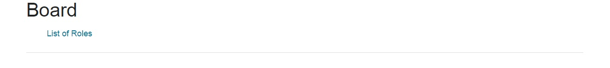 [Image 23]. List of Roles
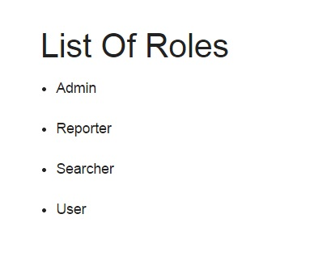 [Image 24]. List of Roles - Display the roles.
3.6.2 Roles
After the admin hits the Roles, the RoleAddToUser page will be displayed and the admin can do the following operations
Assing a new role to a user.
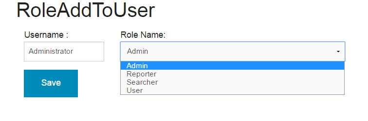 [Image 25]. Assign roles
the username of which will be assigned a role in the text box.
Please check Image 24 - List of Roles.
The assign role has been done successfully.
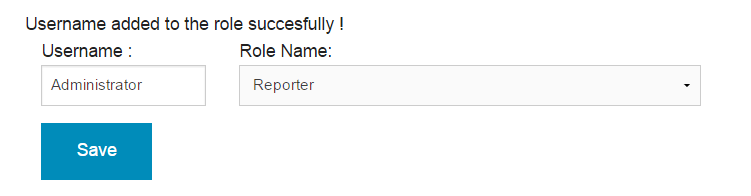 [Image 26]. Successful assign role.
The user has already the role.
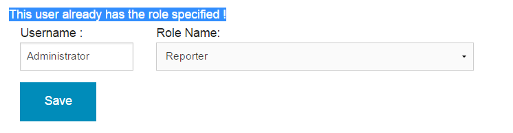 [Image 27]. has a role.
Delete a certain role from a user.
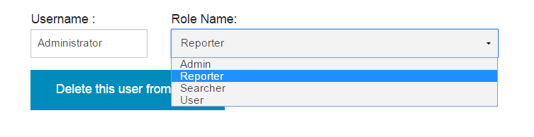 [Image 28]. has a role.
Delete a certain role from a user has been removed sucessfully.
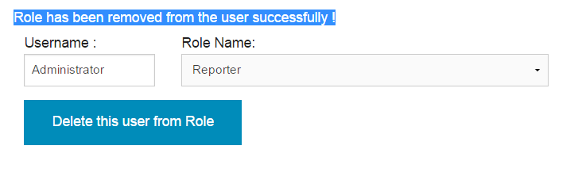 [Image 29]. Delete a role has been done.
Obtainig roles for a user.
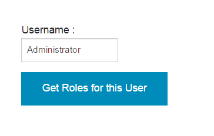 [Image 30]. get roles.
After the admin types the username and click on Get Roles for this user the roles will be displayed.
Obtainig roles for a user.
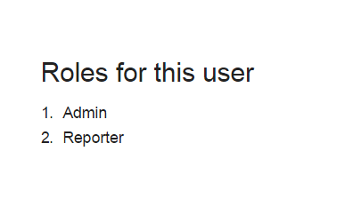 [Image 31]. display roles.
3.6.3 Category
After the admin hits Create a Topic Link on Board page, the create a category page will be displayed
Create a new category.
[Image 33]. Create category.
A new category has been created.
[Image 34]. Create category - After clicking a create the index all categories will be displayed.
Update the name of the category.
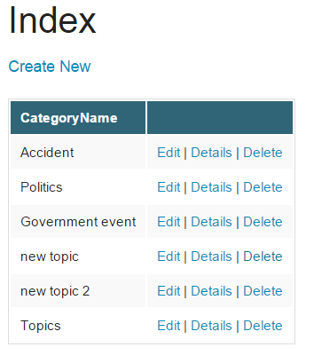 [Image 35]. Updating category - by hitting on Edit link, the category name can be updated.
Update the name of the category has been done.
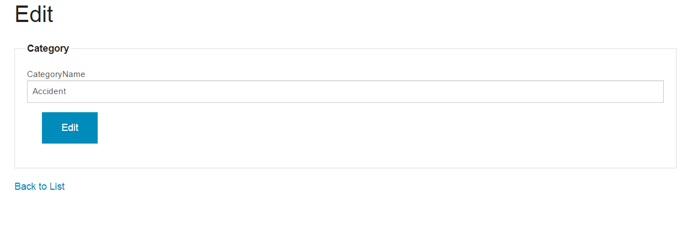 [Image 35]. Updating category - After a certain category and hitting on Edit link, the Edit page will be displayed in order to be able to Edit the name. Afterwards click on Edit button to complete operation and then it will be redirected to Index of Categories.
Delete a certain category.
[Image 35]. Delete category - by hitting on Delete link, the category can be removed.
Confirmation of deleting a category.
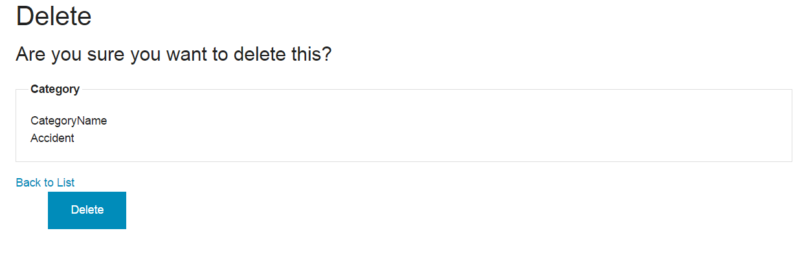 [Image 37]. Confirmation of delete category - After a certain category and hitting on delete link, the Delete page will be displayed in order to be able to Delete the category. Afterwards click on Delete button to complete operation and then it will be redirected to Index of Categories.
Acquiring a category details.
[Image 38]. Delete category - by hitting on Delete link, the category can be removed.
Display the details of the category.
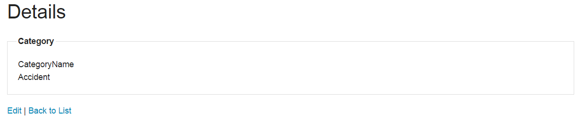 [Image 39]. Display of category details- After a certain category and hitting on details link, the Details page will be shownin order to be able to see the details of a certain category.